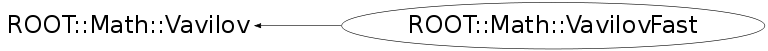

class ROOT::Math::VavilovFast: public ROOT::Math::Vavilov
Class describing a Vavilov distribution.
The probability density function of the Vavilov distribution
as function of Landau's parameter is given by:
\f[ p(\lambda_L; \kappa, \beta^2) =
\frac{1}{2 \pi i}\int_{c-i\infty}^{c+i\infty} \phi(s) e^{\lambda_L s} ds\f]
where \f$\phi(s) = e^{C} e^{\psi(s)}\f$
with \f$ C = \kappa (1+\beta^2 \gamma )\f$
and \f$\psi(s)= s \ln \kappa + (s+\beta^2 \kappa)
\cdot \left ( \int \limits_{0}^{1}
\frac{1 - e^{\frac{-st}{\kappa}}}{t} \,d t- \gamma \right )
- \kappa \, e^{\frac{-s}{\kappa}}\f$.
\f$ \gamma = 0.5772156649\dots\f$ is Euler's constant.
For the class VavilovFast,
Pdf returns the Vavilov distribution as function of Landau's parameter
\f$\lambda_L = \lambda_V/\kappa - \ln \kappa\f$,
which is the convention used in the CERNLIB routines, and in the tables
by S.M. Seltzer and M.J. Berger: Energy loss stragglin of protons and mesons:
Tabulation of the Vavilov distribution, pp 187-203
in: National Research Council (U.S.), Committee on Nuclear Science:
Studies in penetration of charged particles in matter,
Nat. Akad. Sci. Publication 1133,
Nucl. Sci. Series Report No. 39,
Washington (Nat. Akad. Sci.) 1964, 388 pp.
Available from
<A HREF="http://books.google.de/books?id=kmMrAAAAYAAJ&lpg=PP9&pg=PA187#v=onepage&q&f=false">Google books</A>
Therefore, for small values of \f$\kappa < 0.01\f$,
pdf approaches the Landau distribution.
For values \f$\kappa > 10\f$, the Gauss approximation should be used
with \f$\mu\f$ and \f$\sigma\f$ given by Vavilov::mean(kappa, beta2)
and sqrt(Vavilov::variance(kappa, beta2).
For values \f$\kappa > 10\f$, the Gauss approximation should be used
with \f$\mu\f$ and \f$\sigma\f$ given by Vavilov::mean(kappa, beta2)
and sqrt(Vavilov::variance(kappa, beta2).
The original Vavilov pdf is obtained by
v.Pdf(lambdaV/kappa-log(kappa))/kappa.
For detailed description see
A. Rotondi and P. Montagna, Fast calculation of Vavilov distribution,
<A HREF="http://dx.doi.org/10.1016/0168-583X(90)90749-K">Nucl. Instr. and Meth. B47 (1990) 215-224</A>,
which has been implemented in
<A HREF="http://wwwasdoc.web.cern.ch/wwwasdoc/shortwrupsdir/g115/top.html">
CERNLIB (G115)</A>.
The class stores coefficients needed to calculate \f$p(\lambda; \kappa, \beta^2)\f$
for fixed values of \f$\kappa\f$ and \f$\beta^2\f$.
Changing these values is computationally expensive.
The parameter \f$\kappa\f$ must be in the range \f$0.01 \le \kappa \le 12\f$.
The parameter \f$\beta^2\f$ must be in the range \f$0 \le \beta^2 \le 1\f$.
Average times on a Pentium Core2 Duo P8400 2.26GHz:
- 9.9us per call to SetKappaBeta2 or constructor
- 0.095us per call to Pdf, Cdf
- 3.7us per first call to Quantile after SetKappaBeta2 or constructor
- 0.137us per subsequent call to Quantile
Benno List, June 2010
@ingroup StatFunc
Function Members (Methods)
public:
| virtual | ~VavilovFast() |
| virtual double | Cdf(double x) const |
| virtual double | Cdf(double x, double kappa, double beta2) |
| virtual double | Cdf_c(double x) const |
| virtual double | Cdf_c(double x, double kappa, double beta2) |
| virtual double | GetBeta2() const |
| static ROOT::Math::VavilovFast* | GetInstance() |
| static ROOT::Math::VavilovFast* | GetInstance(double kappa, double beta2) |
| virtual double | GetKappa() const |
| virtual double | GetLambdaMax() const |
| virtual double | GetLambdaMin() const |
| virtual double | ROOT::Math::Vavilov::Kurtosis() const |
| static double | ROOT::Math::Vavilov::Kurtosis(double kappa, double beta2) |
| virtual double | ROOT::Math::Vavilov::Mean() const |
| static double | ROOT::Math::Vavilov::Mean(double kappa, double beta2) |
| virtual double | ROOT::Math::Vavilov::Mode() const |
| virtual double | ROOT::Math::Vavilov::Mode(double kappa, double beta2) |
| ROOT::Math::VavilovFast& | operator=(const ROOT::Math::VavilovFast&) |
| virtual double | Pdf(double x) const |
| virtual double | Pdf(double x, double kappa, double beta2) |
| virtual double | Quantile(double z) const |
| virtual double | Quantile(double z, double kappa, double beta2) |
| virtual double | Quantile_c(double z) const |
| virtual double | Quantile_c(double z, double kappa, double beta2) |
| virtual void | SetKappaBeta2(double kappa, double beta2) |
| virtual double | ROOT::Math::Vavilov::Skewness() const |
| static double | ROOT::Math::Vavilov::Skewness(double kappa, double beta2) |
| virtual double | ROOT::Math::Vavilov::Variance() const |
| static double | ROOT::Math::Vavilov::Variance(double kappa, double beta2) |
| ROOT::Math::VavilovFast | VavilovFast(const ROOT::Math::VavilovFast&) |
| ROOT::Math::VavilovFast | VavilovFast(double kappa = 1, double beta2 = 1) |
Data Members
private:
| double | fAC[14] | |
| double | fBeta2 | |
| double | fHC[9] | |
| int | fItype | |
| double | fKappa | |
| int | fNpt | |
| double | fWCM[201] | |
| static ROOT::Math::VavilovFast* | fgInstance |
Class Charts
{kind=link}
{kind=link}
{kind=link}
{kind=link}

Function documentation
VavilovFast(double kappa = 1, double beta2 = 1)
Initialize an object to calculate the Vavilov distribution
@param kappa The parameter \f$\kappa\f$, which must be in the range \f$0.01 \le \kappa \le 12 \f$
@param beta2 The parameter \f$\beta^2\f$, which must be in the range \f$0 \le \beta^2 \le 1 \f$
double Pdf(double x) const
Evaluate the Vavilov probability density function
@param x The Landau parameter \f$x = \lambda_L\f$
double Pdf(double x, double kappa, double beta2)
Evaluate the Vavilov probability density function,
and set kappa and beta2, if necessary
@param x The Landau parameter \f$x = \lambda_L\f$
@param kappa The parameter \f$\kappa\f$, which must be in the range \f$0.01 \le \kappa \le 12 \f$
@param beta2 The parameter \f$\beta^2\f$, which must be in the range \f$0 \le \beta^2 \le 1 \f$
double Cdf(double x) const
Evaluate the Vavilov cummulative probability density function
@param x The Landau parameter \f$x = \lambda_L\f$
double Cdf(double x, double kappa, double beta2)
Evaluate the Vavilov cummulative probability density function,
and set kappa and beta2, if necessary
@param x The Landau parameter \f$x = \lambda_L\f$
@param kappa The parameter \f$\kappa\f$, which must be in the range \f$0.01 \le \kappa \le 12 \f$
@param beta2 The parameter \f$\beta^2\f$, which must be in the range \f$0 \le \beta^2 \le 1 \f$
double Cdf_c(double x) const
Evaluate the Vavilov complementary cummulative probability density function
@param x The Landau parameter \f$x = \lambda_L\f$
double Cdf_c(double x, double kappa, double beta2)
Evaluate the Vavilov complementary cummulative probability density function,
and set kappa and beta2, if necessary
@param x The Landau parameter \f$x = \lambda_L\f$
@param kappa The parameter \f$\kappa\f$, which must be in the range \f$0.01 \le \kappa \le 12 \f$
@param beta2 The parameter \f$\beta^2\f$, which must be in the range \f$0 \le \beta^2 \le 1 \f$
double Quantile(double z) const
Evaluate the inverse of the Vavilov cummulative probability density function
@param z The argument \f$z\f$, which must be in the range \f$0 \le z \le 1\f$
double Quantile(double z, double kappa, double beta2)
Evaluate the inverse of the Vavilov cummulative probability density function,
and set kappa and beta2, if necessary
@param z The argument \f$z\f$, which must be in the range \f$0 \le z \le 1\f$
@param kappa The parameter \f$\kappa\f$, which must be in the range \f$0.01 \le \kappa \le 12 \f$
@param beta2 The parameter \f$\beta^2\f$, which must be in the range \f$0 \le \beta^2 \le 1 \f$
double Quantile_c(double z) const
Evaluate the inverse of the complementary Vavilov cummulative probability density function
@param z The argument \f$z\f$, which must be in the range \f$0 \le z \le 1\f$
double Quantile_c(double z, double kappa, double beta2)
Evaluate the inverse of the complementary Vavilov cummulative probability density function,
and set kappa and beta2, if necessary
@param z The argument \f$z\f$, which must be in the range \f$0 \le z \le 1\f$
@param kappa The parameter \f$\kappa\f$, which must be in the range \f$0.01 \le \kappa \le 12 \f$
@param beta2 The parameter \f$\beta^2\f$, which must be in the range \f$0 \le \beta^2 \le 1 \f$
void SetKappaBeta2(double kappa, double beta2)
Change \f$\kappa\f$ and \f$\beta^2\f$ and recalculate coefficients if necessary
@param kappa The parameter \f$\kappa\f$, which must be in the range \f$0.01 \le \kappa \le 12 \f$
@param beta2 The parameter \f$\beta^2\f$, which must be in the range \f$0 \le \beta^2 \le 1 \f$
double GetLambdaMin() const
Return the minimum value of \f$\lambda\f$ for which \f$p(\lambda; \kappa, \beta^2)\f$
is nonzero in the current approximation
double GetLambdaMax() const
Return the maximum value of \f$\lambda\f$ for which \f$p(\lambda; \kappa, \beta^2)\f$
is nonzero in the current approximation
VavilovFast * GetInstance(double kappa, double beta2)
Returns a static instance of class VavilovFast,
and sets the values of kappa and beta2
@param kappa The parameter \f$\kappa\f$, which must be in the range \f$0.01 \le \kappa \le 12 \f$
@param beta2 The parameter \f$\beta^2\f$, which must be in the range \f$0 \le \beta^2 \le 1 \f$